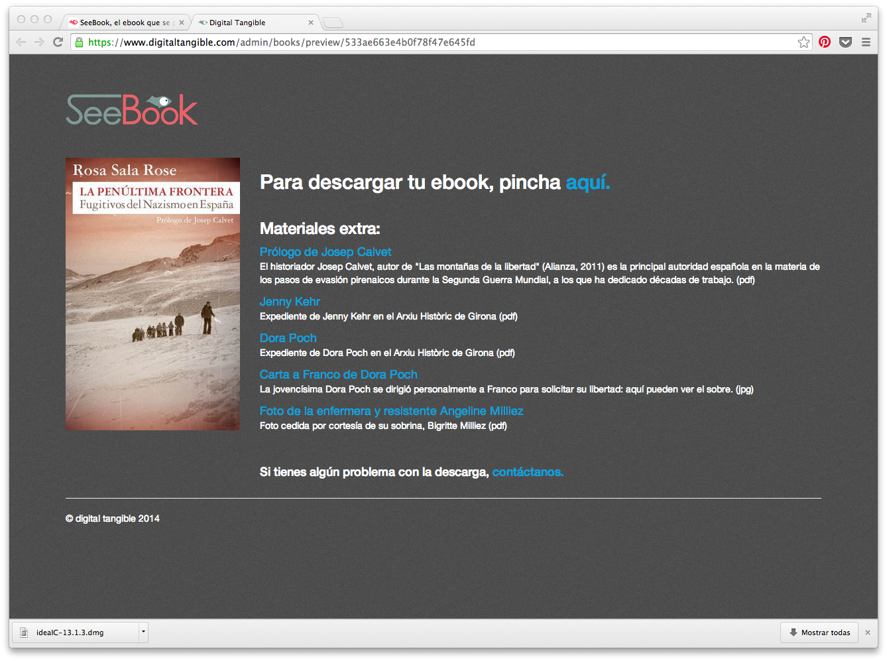
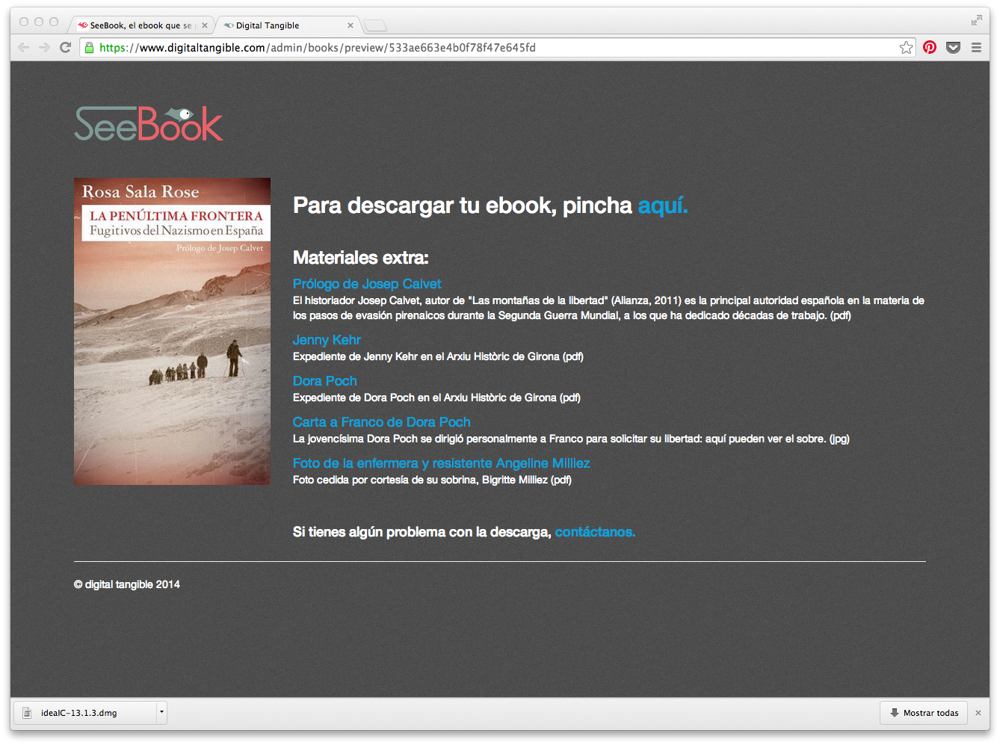

Seebook és una targeta de descàrrega de llibres digitals (ebooks).
Gràcies als codis del seu interior, podràs descarregar el ebook en
el format que vulguis (PDF, ePub o Mobi per Kindle) i des del dispositiu que vulguis
(tableta, mòbil o PC).

Un ebook en Seebook costa gairebé sempre el mateix que si ho compressis en una
plataforma online de venda de ebooks. Amb l'avantatge que pots emprar la targeta
Seebook les vegades que vulguis i fins i tot baixar-te el mateix llibre en més d'un
format.
Els ebooks descarregats amb Seebook no porten DRM. Amb Seebook, tu posseeixes l'arxiu que compres.
Tens algun amic al que acostumaves a regalar llibres en paper i ara ja no perquè s'ha passat a la lectura digital? Seebook et soluciona aquest problema: pots embolicar-li per a regal i escriure una nota personal a l'espai en blanc del seu interior.

Ah, i també pots enviar-ho fàcilment per correu... Seebook no té restriccions geogràfiques, així que podran descarregar-ho els teus amics de qualsevol lloc del món.
Molts dels nostres Seebook estan enriquits amb materials extra: capítols descartats, àudios de l'autor, imatges relacionades amb el llibre... Com els extres d'un DVD.
 

Perquè en Seebook valorem l'escriptura i sabem que la creació d'un llibre va acompanyat d'un univers que mereix ser conegut.
Vols comprar un? Pots fer-ho a més de 150 llibreries de toda Espanya o a la nostra botiga online.

És molt senzill.
Si fas servir mòbil o tableta, et recomanem que escanegis el codi QR de l'interior.
(Els
dispositius més moderns tenen un lector de QRs ja integrat. Si no fos el teu cas, hi ha
centenars
d'aplicacions gratuïtes que pots descarregar-te).

Si descarregues el teu ebook des d'un PC, et resultarà més pràctic teclejar a la finestreta superior de www.seebook.eu el codi alfanumèric que trobaràs aquí:
Ja només hauràs d'introduir la teva adreça de correu electrònic i escollir el format que desitgis per al teu ebook:
Als pocs minuts rebràs l'enllaç de descàrrega en la safata d'entrada del teu email:
Ja només cal que hi cliquis!
Guarda la teva targeta Seebook! Així tindràs un bonic recordatori del que has llegit i podràs tornar a descarregar l'ebook si el perdessis.
Actualment tenim tres opcions per llegir un llibre:
Opció a: el llibre en paper

Opció b: l'ebook

Opció c: el nostre Seebook, que és digital i tangible alhora.

Per això ens hauria agradat anomenar-lo c-book, per ser l'opció c, però en català això sona a bòvid asiàtic.
Pronunciat en anglès, en canvi, tenim Seebook.
Doncs bé: see ens porta cap a 'veure', però també cap a sea, que és el mar.
Per aquest motiu el nostre logo és… un peix amb ulls grans!

 CEO de Digital Tangible S.L., però també doctora en filologia, assagista, intèrpret
simultània i
traductora literària. La seva especialitat és la història i cultura alemanyes. Ha escrit:
CEO de Digital Tangible S.L., però també doctora en filologia, assagista, intèrpret
simultània i
traductora literària. La seva especialitat és la història i cultura alemanyes. Ha escrit:
Diccionario crítico de mitos y símbolos del nazismo
El misterioso caso alemán. Un intento de comprender Alemania a través de sus letras
Lili Marleen. Canción de amor y muerte
La penúltima frontera. Fugitivos del nazismo en España
El marqués y la esvástica, en coautoría amb en Plàcid García-Planas. Compra'l aquí signat pels autors!
Rosa Sala Rose és la creadora de Seebook: quan va publicar el seu primer ebook se li va ocórrer que estaria ben poder-lo signar a les seves presentacions, com fa amb els seus llibres en paper. Això va ser l'origen de tot plegat.
Abans que aquesta demencial ocurrència li absorbís tot el seu temps, impartia conferències, col·laborava amb mitjans de comunicació i mantenia un bloc. De vegades encara aconsegueix escapolir-se i hi torna.
 COO de Digital Tangible S.L. És llicenciat en sociologia i màster en ciències de
l'administració per la Universitat de Barcelona.
Ha realitzat postgraus en comunicació. Ha estat gestor públic en diverses empreses i
fundacions: vicepresident de la fundació sanitària privada de
Sant Llàtzer, vicepresident de la companyia de gestió mediambiental Terrassa Neta, SA,
vicepresident executiu de les empresa Eco-Equip, SAM i president de la gestora de residus
urbans GRUVOSA.
COO de Digital Tangible S.L. És llicenciat en sociologia i màster en ciències de
l'administració per la Universitat de Barcelona.
Ha realitzat postgraus en comunicació. Ha estat gestor públic en diverses empreses i
fundacions: vicepresident de la fundació sanitària privada de
Sant Llàtzer, vicepresident de la companyia de gestió mediambiental Terrassa Neta, SA,
vicepresident executiu de les empresa Eco-Equip, SAM i president de la gestora de residus
urbans GRUVOSA.
Jordi, després de molts anys en l'administració pública ha decidit, en plena crisi econòmica, passar-se a la privada.
 CTO i arquitecte del sistema. Simon està especialitzat en projectes de programari àgil,
sobretot d'aplicacions per a mòbil i web. Té gran experiència operant en un entorn
internacional i sota les condicions difícils de les startups. Ha treballat prèviament per a
diversos projectes i startups a Alemanya, Estats Units, Singapur, Canadà, Gran Bretanya,
Espanya i la Xina en diversos sectors, incloent serveis financers, telemedicina i
telecomunicació.
CTO i arquitecte del sistema. Simon està especialitzat en projectes de programari àgil,
sobretot d'aplicacions per a mòbil i web. Té gran experiència operant en un entorn
internacional i sota les condicions difícils de les startups. Ha treballat prèviament per a
diversos projectes i startups a Alemanya, Estats Units, Singapur, Canadà, Gran Bretanya,
Espanya i la Xina en diversos sectors, incloent serveis financers, telemedicina i
telecomunicació.
Simon aplica la metodologia del Value Driven Development, que explica aquí.
Seebook és una marca registrada de
C/Girona, 130 Pral. 2ª
08037 Barcelona
Tel: 933 003 343
NIF: B 66088592
Les targetes Seebook estan protegides com a model d'utilitat a Espanya i Mèxic.